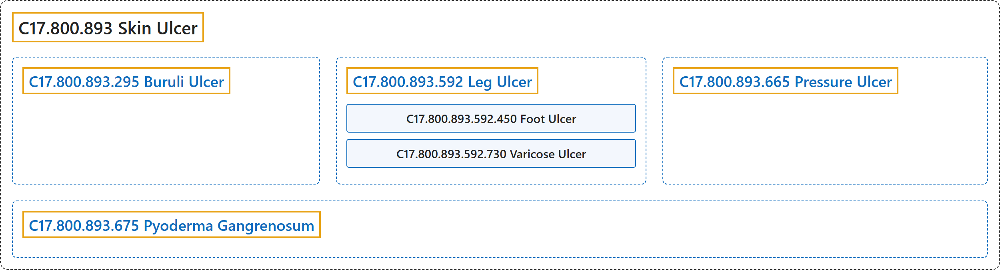

C17.800.893 Skin Ulcer
Classification

Glossary
| Term | Definition | 中文翻译 | Source |
|---|---|---|---|
| C17.800.893 Skin Ulcer 皮肤溃疡 |
"An ULCER of the skin and underlying tissues." | 皮肤及其下组织的溃疡（ULCER）。 | National Library of Medicine, 2026, "Skin Ulcer" scope note |
| C17.800.893.295 Buruli Ulcer 布鲁里溃疡 |
"A lesion in the skin and subcutaneous tissues due to infections by MYCOBACTERIUM ULCERANS. It was first reported in Uganda, Africa." | 由溃疡分枝杆菌（MYCOBACTERIUM ULCERANS）感染引起的皮肤和皮下组织病变。最早报道于非洲乌干达。 | National Library of Medicine, 2026, "Buruli Ulcer" scope note |
| C17.800.893.592 Leg Ulcer 腿部溃疡 |
"Ulceration of the skin and underlying structures of the lower extremity. About 90% of the cases are due to venous insufficiency (VARICOSE ULCER), 5% to arterial disease, and the remaining 5% to other causes." | 下肢皮肤及其下方结构的溃疡。约 90% 的病例由静脉功能不全（静脉曲张性溃疡（VARICOSE ULCER））引起，5% 由动脉疾病引起，其余 5% 由其他原因引起。 | National Library of Medicine, 2026, "Leg Ulcer" scope note |
| C17.800.893.592.450 Foot Ulcer 足溃疡 |
"Lesion on the surface of the skin of the foot, usually accompanied by inflammation. The lesion may become infected or necrotic and is frequently associated with diabetes or leprosy." | 足部皮肤表面的病变，通常伴有炎症。病变可发生感染或坏死，常与糖尿病或麻风相关。 | National Library of Medicine, 2026, "Foot Ulcer" scope note |
| C17.800.893.592.450.200 Diabetic Foot 糖尿病足 |
"Common foot problems in persons with DIABETES MELLITUS, caused by any combination of factors such as DIABETIC NEUROPATHIES; PERIPHERAL VASCULAR DISEASES; and INFECTION. With the loss of sensation and poor circulation, injuries and infections often lead to severe foot ulceration, GANGRENE and AMPUTATION, SURGICAL." | 糖尿病（DIABETES MELLITUS）患者常见的足部问题，由糖尿病神经病变（DIABETIC NEUROPATHIES）、周围血管疾病（PERIPHERAL VASCULAR DISEASES）和感染（INFECTION）等因素的任意组合所致。随着感觉丧失和循环不良，损伤和感染常导致严重的足部溃疡、坏疽（GANGRENE）和外科截肢（AMPUTATION, SURGICAL）。 | National Library of Medicine, 2026, "Diabetic Foot" scope note |
| C17.800.893.592.730 Varicose Ulcer 静脉曲张性溃疡 |
"Skin breakdown or ulceration in the drainage area of a VARICOSE VEIN, usually in the leg." | 静脉曲张（VARICOSE VEIN）引流区域的皮肤破损或溃疡，通常位于腿部。 | National Library of Medicine, 2026, "Varicose Ulcer" scope note |
| C17.800.893.665 Pressure Ulcer 压疮 |
"An ulceration caused by prolonged pressure on the SKIN and TISSUES when one stays in one position for a long period of time, such as lying in bed. The bony areas of the body are the most frequently affected sites which become ischemic (ISCHEMIA) under sustained and constant pressure." | 一种因长时间保持一个体位（如卧床）时皮肤（SKIN）和组织（TISSUES）长期受压而引起的溃疡。身体骨突部位是最常受累的部位，在持续恒定的压力下会发生缺血（ISCHEMIA）。 | National Library of Medicine, 2026, "Pressure Ulcer" scope note |
| C17.800.893.675 Pyoderma Gangrenosum 坏疽性脓皮病 |
"An idiopathic, rapidly evolving, and severely debilitating disease occurring most commonly in association with chronic ulcerative colitis. It is characterized by the presence of boggy, purplish ulcers with undermined borders, appearing mostly on the legs. The majority of cases are in people between 40 and 60 years old. Its etiology is unknown." | 一种特发性、进展迅速且严重致衰弱的疾病，最常与慢性溃疡性结肠炎相伴发生。其特征为出现边缘潜行的松软紫色溃疡，多见于腿部。大多数病例为 40 至 60 岁的人。其病因不明。 | National Library of Medicine, 2026, "Pyoderma Gangrenosum" scope note |
References
National Library of Medicine. (2026). MeSH 2026 descriptor records [Data set]. Retrieved October 28, 2026, from https://www.nlm.nih.gov/databases/download/mesh.html